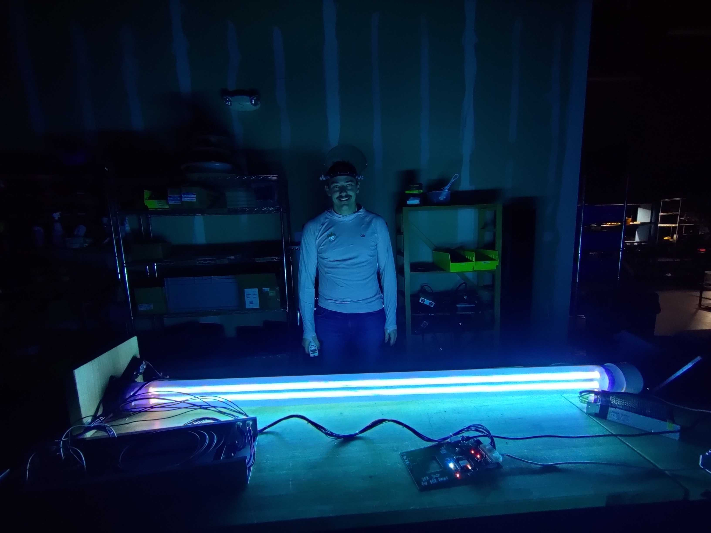
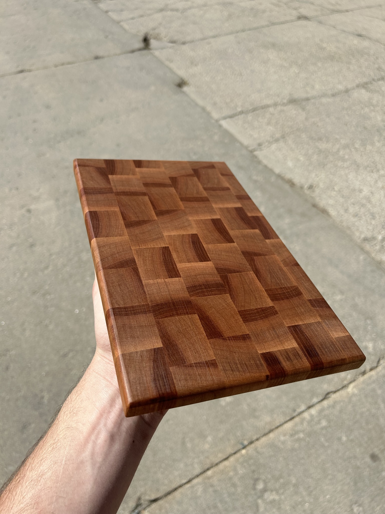

Robotics Work

Software Projects
- Doomscroll Detector (2025-09-13): A YOLOv8 vision pipeline and dashboard that detects whether you're scrolling your phone while reclining and begins charging your credit card $0.25/second. I learned the basics of openCV, learned that uvicorn servers can serve static files, which is handy for avoiding a React mess. I built this for Hack CMU 2025 over 24 hours.
- Physics Vis (May 2025): STEM diagram generation and interpretation using LLMs. This app can tutor introductory physics with free body diagrams! I learned to use server-sent events with this project, and cursed at d3.js a bit more.
- Fermi Chain: a wordle-like daily game to practice order-of-magnitude reasoning (think "What volume of air does humanity inhale in a day?"). This got 3k visits and HN front page! This is where I learned design/styling more deeply, and also learned the importance of thinking carefully about your data model, early.
- Circuit Tutor: an LLM-powered electronics copilot. Useful for learning, and, fleshed out, I think it could be genuinely useful for circuit design and debugging, much like Falstad's Circuit Simulator. This project was inspired by my job at Tortuga AgTech, where I often had to debug unfamiliar circuits as a non-EE. With LLMs being all the rage and very useful for understanding a codebase, I thought it would be cool to try this for circuits. I learned about the directed graph data structure to write the layout algorithm on the backend, and also used Python on the server (FastAPI) for the first time. Also cursed at d3.js a bit.
- Small GPT: small language model I trained to learn the basics of ML (pure pytorch, no frameworks). Inspired by the very helpful intro repo from Andrej Karpathy.
- ASCII Animations in C:A fun experiment in rendering platonic solids to the terminal in ascii characters with C. Inspired by this famous blogpost.
- Mental Math: a react quiz app I made because I have a mechanical engineering degree and still multiply on my fingers lol
- Hot Dice Scoreboard: a react scoreboard UI for a group dice game that my in-laws play. Figuring out the finite state machine for this just delighted my brain. To implement the FSM, I used useReducer.
- Spotify Player: a spotify playback app. I learned authentication and public API usage with this project.
Random Non-Software Projects Gallery

